PetriNetter
PetriNetter is a tool for graphically defining Place/Transition Petri nets and analysing their behaviour. Currently the tool allows you to define a Petri net, play the token game, explore the reachability graph and calculate some basic properties.
The Editor
When the program opens you are greeted by a blank canvas on which you can create your Place/Transition Petri net. Actions can be performed via the menu bar or the tool bar.
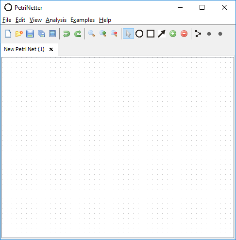
New File
You can open a new Petri net by choosing the ‘New’ action from the menu or tool bar, or by using the Ctrl+N or Ctrl+T keyboard shortcut. This will open the net in a new tab allowing you to open multiple tabs simultaneously to compare them.
Open File
You can open saved Petri nets by selecting the ‘Open’ action from the menu or tool bar, or by using the Ctrl+O keyboard shortcut. PetriNetter saves and loads nets in the ‘.pnet’ file format, as the standard PNML format is not currently supported.
Save File
To save a Petri net choose the ‘Save’ or ‘Save As’ options from the menu or tool bar, or by using the Ctrl+S and Strl+Shift+S keyboard shortcuts respectively.
When you save a net, the name of the tab will be updated to reflect the file name.
Creating a Petri net
A Petri net can be created graphically on the canvas using either the tool modes found in the tool bar, or through the right click context menu. If you make a mistake you can undo changes to the Petri net with Ctrl+Z. You can delete components by selecting the ‘Cursor’ tool, selecting the components you wish to delete then hitting the delete key.
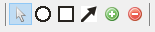Adding and editing places
Places can be added by selecting the ‘Add Place’ tool (circle icon). The cursor will change to a circle to confirm you are using the Place tool. You can now left click on the canvas to add places.
Alternatively, you can add a place by right clicking the canvas and choosing the ‘Add Place’ option.
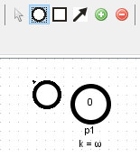 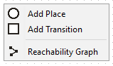To edit the properties of a place, right click the place you wish to edit to see its context menu. In this menu you can enter a name, the number of tokens in the place and the place’s capacity. If you want to have unlimited capacity you can enter 'n' as the capacity.
From this menu you can also change the position of the place’s label to avoid overlapping.
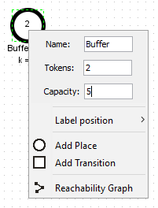You can also add and remove tokens from places using the ‘Add Token’ and ‘Remove Token’ tools and left clicking on places.
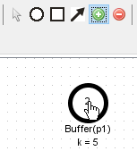Adding a transition
Transitions can be added by selecting the 'Add Transition' tool (square icon). Again the cursor will change to confirm you are using the right tool. You can now add transitions by clicking on the canvas on the position you want to add transitions.
You can also use the right click menu to add transitions in the same way as places.
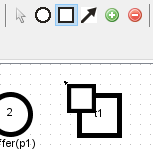Adding and editing arcs
Arcs can be added from places to transitions, or from transitions to places. You can’t connect a place to a place or a transition to a transition.
To add an arc, choose the ‘Add Arc’ tool from the tool bar, then click and drag from the source component to the destination component.
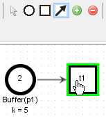By default arcs have a weight of 1. To change the weight of an arc, right click it and chance the weight value.
To reposition an arc, select it and drag an end to a different arc or transition.
Firing transitions
When an arc meets the condition for a transition to fire, it is highlighted in red. When this is true for all arcs connected to a transition, the transition is also highlighted in red to indicate that it is enabled.
When a transition is enabled, you can fire that transition either by double clicking it or right clicking it and selecting ‘Fire Transition’.
After firing a transition, the net will update to show the flow of tokens through the net.
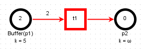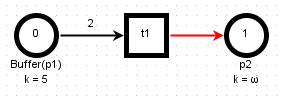If you want to disable the red highlighting, you can do by disable ‘Highlight Active Transitions’ in the ‘View’ menu.
Generating a Reachability graph
Once you have finished defining your net, you can generate a reachability graph. This is a meta-graph of the states your net can reach by firing transitions.
To generate a reachability graph, choose the ‘Create Reachability Graph’ action from the toolbar, Analysis menu, or right click context menu.
A dialog will appear that lets you set the maximum number of markings to explore. Leaving it at the default will usually be ok, but if you have a particularly complicated net you can increase this up to 1000.
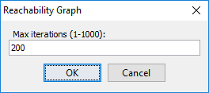The reachability graph will be shown in a new pane next to the Petri net. M0 is the initial marking (state) of the net when you generated the reachability graph, and the other nodes are reachable markings. The initial marking is displayed as a vector below the reachability graph for reference as you explore the reachability graph.
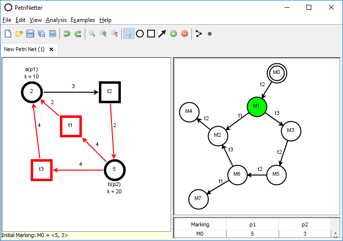You can explore the reachable markings by firing transitions on the net, or by selecting nodes on the reachability graph by double clicking or through the right click menu to go straight to that marking. Any change in marking will be reflected on both the Petri net and the Reachabiltiy graph so you can see how they relate to one another.
The initial marking is distinguishable by the double circle outline. This is the marking from which the reachability graph was generated.
The current marking that you are viewing is highlighted in green.
If your reachability graph is large enough that not all nodes could be explored, the unexplored nodes will have a red outline to show that they are unexplored rather than dead ends.
Finding Marking
If you want to find a specific marking on the reachability graph you can right click the graph and select ‘Find Marking’. This will open a dialog that lets you enter the tokens at each place, and once you click ok it will tell you if that marking is in the reachability graph.
If you want to browse the markings, they are available as a table below the reachability graph.
Analysing the graph
This initial version of PetriNetter comes with some limited analysis options. These will hopefully be expanded in future versions.
After generating a reachability graph you can choose the following analysis options:
- Place Boundedness - Calculates the maximum number of tokens at each place across all markings.
- Semi-Liveness - Calculates which transitions are semi-live. A semi-live transition is one that can be fired in any sequence from the initial marking.
If the reachability graph is not complete, you can still analyse for these properties but a warning will appear with the results alerting you that they may be incorrect.
Closing the Reachability graph
The reachability graph is based off the state of the net when it was generated. Therefore you cannot edit the net while it is open. When you are done viewing the reachability graph, or if you want to make changes to the net, you can close the reachability graph by choosing the ‘Create’ Reachability Graph’ action from the menu or tool bar a second time, or by right clicking the graph and choosing ‘Close reachability Graph’.
When you close the reachability graph, the Petri net will revert back to the initial marking.